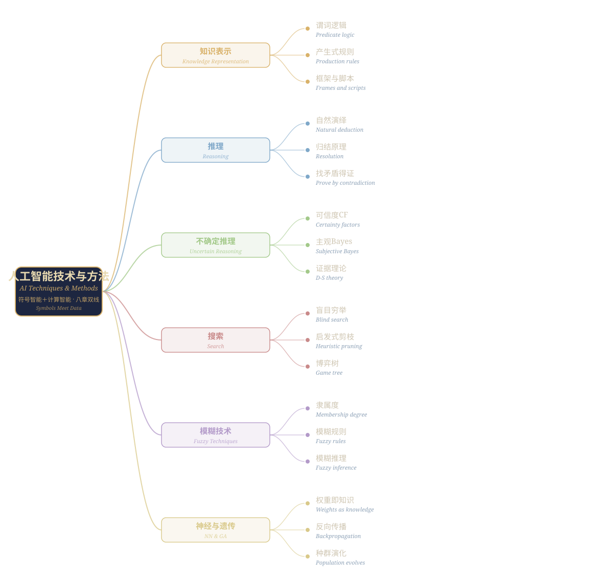

人工智能技术与方法
〇 · 书籍信息
基本信息
| 总纲 | 内容提要给出全书的分野：「符号智能即所谓的传统人工智能，主要研究基于知识的智能，它包括三个方面：知识表示、知识运用和知识获取」——传统人工智能研究的思路是「自上而下」，将知识通过符号进行表示和运用 |
|---|---|
| 对极 | 「计算智能是研究基于数据的智能，包括神经网络、遗传算法、模糊技术和人工生命等，它以数据为基础，通过训练建立联系，进行问题求解」——「自上而下」对「自下而上」：这本书用八章把两条路线各讲一半（1–5章符号 · 6–8章计算智能） |
| 结构 | 「全书共8章，分为两部分。第一部分包括第1章到第5章，介绍人工智能的一般性原理和技术实现，主要有知识的表示、问题的求解、推理与搜索等；第二部分包括第6章到第8章，介绍现代人工智能中几种重要的智能技术与方法，主要有模糊技术、神经网络、遗传算法等」 |
| 一句话 | 这是一本把「AI 的骨架」讲全的教材：知识怎么表示、结论怎么推出、不确定怎么算、路径怎么搜——最后用模糊·神经·遗传三件现代武器收尾——二十年前的教材，框架至今未过时。 |
一 · 核心主题总览
这部八章教材的四条主线：① 表示先于推理
符号智能的第一定律：「知识表示、知识运用和知识获取」——表示排在运用之前：谓词逻辑、产生式规则、语义网络、框架、脚本五种表示法（第2章）各有适配的问题形态——选错表示法，推理引擎再好也跑不动——教材把 5 节篇幅全部给表示，是顺序即重点的写法
② 不确定性的工程化
第 4 章是全书最实用的部分：「这是因为构成知识的信息可能是精确的，也可能是不精确」——确定性方法（可信度 CF）、主观 Bayes 方法、证据理论（D-S 理论）三套工具，把「大概」「可能」翻译成可计算的信任度——AI 落地的第一课：现实世界的数据都是脏的，推理器必须带不确定性接口
③ 搜索即问题求解
第 5 章的地图术：「还可以融合附加的启发式等知识，使得问题求解的推理向着最有希望的方向上进行」——盲目搜索（宽度·深度）穷举，启发式搜索用评估函数剪枝，博弈树搜索处理「对手在场」的情形——从状态空间到 A* 算法：问题求解被抽象成「在图上找路」
④ 自下而上的新路线
第二部分的宣言：「这一『自下而上』的新的研究方法引起来自各方面越来越多的关注，成为现代人工智能新的研究热点与方向」——模糊技术（用隶属度处理语言）、神经网络（用数据训练联系）、遗传算法（用演化逼近最优）——三条路共享一个信念：智能可以从数据与适应中长出来，不必手工编写
二 · 第一段 知识表示 —— 符号智能的地基—— 谓词 · 产生式 · 框架 · 脚本 ——
符号智能的三件事
第 1–2 章定框架：「符号智能即所谓的传统人工智能，主要研究基于知识的智能，它包括三个方面：知识表示、知识运用和知识获取」——「传统人工智能研究的思路是『自上而下』，它将知识通过符号进行表示和运用，并具体化为规则等形式」——表示法五种：谓词逻辑（严谨可证明）、产生式规则（IF-THEN 好执行）、语义网络（关系可视化）、框架（结构化槽位）、脚本（事件序列）——五种表示法不是并列的备胎，是五种不同问题形态的专用模具。
◆ 语言学习 · 概念 · 表示法
| 自上而下 | 符号智能路线：知识先编成规则 |
|---|---|
| 谓词逻辑 | 可证明的严谨：数理逻辑的直接继承 |
| 产生式 | IF-THEN 规则：专家系统的语言 |
| 框架/脚本 | 结构化槽位与事件序列：常识的容器 |
句型 ｜ 「知识表示、知识运用和知识获取」。——顺序即重点：表示在先、运用在后——选错模具，推理再强也白搭。
推理的两种演绎
第 3 章把推理收敛成两族：自然演绎推理——从前提按逻辑规则一步步推结论；归结演绎推理——反着来：要证结论成立，先假设它不成立，推出矛盾即得证——归结原理把定理证明变成机械可执行的符号操作，这是自动定理证明的基石：AI 第一次把「证明」从天赋变成流程。
◆ 语言学习 · 概念 · 归结
| 自然演绎 | 正向推：前提→结论 |
|---|---|
| 归结原理 | 反向证：否定结论→找矛盾 |
| 自动定理证明 | 证明流程化：AI 最早的完整战果 |
| 子句集 | 归结的操作对象：化到最简再动手 |
习语 ｜ 证明不了就证伪它的否定。——归结原理的口诀：把「证明」变成「找矛盾」——机器第一次摸到了人类演绎的内核。
三 · 第二段 不确定推理 —— 给「大概」定价—— CF · 主观Bayes · 证据理论 ——
为什么要不确定
第 4 章开篇即动机：「这是因为构成知识的信息可能是精确的，也可能是不精确」——现实世界的证据天然带噪：病人说「有点发烧」，观测说「大概率是」——确定性方法（CF）给每条规则贴可信度系数，推理时逐级传播；主观 Bayes 方法（PROSPECTOR 系统）用似然比把专家的「怀疑/信任」变成贝叶斯更新；证据理论（D-S 理论）更进一步：允许「不知道」——信任可以分配给「既非真也非假」的区间。
◆ 语言学习 · 概念 · 不确定
| 可信度 CF | 确定性方法：规则系数逐级传播 |
|---|---|
| 主观 Bayes | 似然比更新：专家直觉的贝叶斯化 |
| D-S 证据理论 | 信任函数：允许把票投给「不知道」 |
| 信任区间 | 真假的区间估计：不是单点 |
句型 ｜ 「构成知识的信息可能是精确的，也可能是不精确」。——教材的诚实开场：先承认数据是脏的，再谈方法——AI 工程的第一课。
三套工具的分工
三套不确定推理工具不是冗余，是三种证据形态的适配：CF 适合「经验规则＋弱理论」的领域（医疗专家系统 MYCIN 的遗产）；主观 Bayes 适合「有先验概率可用」的领域（矿物勘探 PROSPECTOR 的实战）；D-S 适合「多源证据需要合成」的领域——三套工具共同的信念：不确定性不是推理的敌人，是可以定价、传播、合成的资源——这一章是 2004 年的教材里最不显老的部分。
◆ 语言学习 · 概念 · 分工
| MYCIN 遗产 | CF 的出身：医疗专家系统的可信度 |
|---|---|
| PROSPECTOR | 主观 Bayes 的实战：矿物勘探 |
| 证据合成 | D-S 的强项：多源证据的融合 |
| 不确定即资源 | 不是噪声：是可计算的信任度 |
习语 ｜ 不确定性可以定价、传播、合成。——工程思维的分水岭：把「大概」当噪声就卡住，当资源就通了——概率工具箱的价值在此。
四 · 第三段 搜索 —— 问题求解的地图术—— 盲目 · 启发式 · 博弈树 ——
从穷举到剪枝
第 5 章把问题求解抽象成状态空间找路：盲目搜索策略（宽度优先·深度优先）——不挑路，穷举到底，保证找到但代价大；启发式搜索——「融合附加的启发式等知识，使得问题求解的推理向着最有希望的方向上」推进：评估函数给每个节点打分，A* 算法用「已走代价＋预估代价」作为评分——启发式的本质：用领域知识换搜索效率；书还给出棋盘势态实例，把抽象算法落到可画的棋盘上。
◆ 语言学习 · 概念 · 启发式
| 状态空间 | 问题求解的地图：节点是状态，边是动作 |
|---|---|
| 盲目搜索 | 穷举：保证解但不保证快 |
| 评估函数 | 启发式的核心：给节点打分 |
| A* 算法 | 已走＋预估：最优路径的经典解 |
句型 ｜ 「使得问题求解的推理向着最有希望的方向上」。——启发式的定义：领域知识换搜索效率——知道得越多，走得越少。
博弈树：对手在场
第 5.4 节处理最特殊的一类搜索：博弈树搜索——对手会反应：你走一步，对手走一步——Max-Min 博弈：自己选使己方评分最大的一步，假设对手会选使己方评分最小的一步——α-β 剪枝在不改变结果的前提下砍掉大量分支——博弈树是搜索技术的试金石：从国际象棋到围棋，机器博弈的历史就是搜索算法的进化史。
◆ 语言学习 · 概念 · 博弈
| Max-Min | 我方取最大：假设对手取我方最小 |
|---|---|
| α-β 剪枝 | 结果不变的减负：砍掉无用分支 |
| 博弈树 | 对抗性搜索：两层一个回合 |
| 试金石 | 棋类是搜索算法的练兵场 |
习语 ｜ 做最好的打算，假设对手做对你最坏的打算。——Max-Min 的一句人话：对抗性决策的保守智慧—— α-β 剪枝再把这个保守变成可计算。
五 · 第四段 计算智能 —— 模糊·神经·遗传三件套—— 隶属度 · 训练 · 演化 ——
模糊：给语言装上刻度
第 6 章是「自下而上」的第一件武器：模糊逻辑——书中的入门例：身高 1.45 m 在经典集合里被判为「个子不高」即 x=0，但「对于其余的身高……看法就不统一了」——模糊集合给「高」一个隶属度：不是 0/1 的判决，是 0 到 1 的连续刻度；「模糊规则与推理」把「如果高且胖则风险大」这样的句子变成可计算的推理链——模糊技术处理的是人类语言的天然地带：精确数学够不着的「大概」「差不多」。
◆ 语言学习 · 概念 · 隶属度
| 隶属度 | 0 到 1 的连续刻度：高矮胖瘦不再二值 |
|---|---|
| 模糊集合 | 边界的渐变：判决变成刻度 |
| 模糊规则 | 语言化的 IF-THEN：句子的可计算化 |
| 模糊推理 | 从模糊前提推模糊结论：推理链 |
句型 ｜ 身高 1.45 m 在经典集合里「不算高」即 x=0。——教材的入门例：经典集合说 0，模糊集合说「接近 0 但不是 0」——一个数字之争，两个学派的分水岭。
神经网络：让联系从数据里长出来
第 7 章转向第二件武器：「20世纪80年代人工神经网络研究出现了新的突破，基于结构演化的计算智能迅速成为人工智能研究的发展方向」——人工神经网络不存规则，只存权重：以数据为基础，通过训练建立联系——从感知机到多层网络到反向传播，教材把「学习」定义成误差驱动的权重调整：网络不是被编写出来的，是被训练出来的——「自下而上」路线的核心示范。
◆ 语言学习 · 概念 · 训练
| 权重 | 网络的知识形态：不存规则存权重 |
|---|---|
| 反向传播 | 误差回传：权重调整的通用引擎 |
| 自适应线性单元 | Adaline：最早的收敛保证 |
| 训练 | 「通过训练建立联系」：智能从数据长出 |
习语 ｜ 网络不是被编写出来的，是被训练出来的。——两代 AI 的分界句：符号智能写规则，神经网络练权重——今天的深度学习，是这句话的延长线。
遗传算法：让最优自己浮出来
第 8 章收尾于第三件武器：遗传算法基本原理——「标准的遗传算法是对群体中的个体进行遗传操作」：编码→初始群体→适应度评估→选择·交叉·变异→新群体，循环直到收敛——「由于遗传算法是对群（体的）」并行搜索：不从一个点出发爬山，而是让一片种群整体演化——与前两章同构：模糊处理语言的模糊、神经网络处理数据的关联、遗传算法处理空间的搜索——三件套合起来，「自下而上」的方法论完整成型。
◆ 语言学习 · 概念 · 演化
| 编码 | 解的染色体化：优化问题的表示层 |
|---|---|
| 适应度 | 环境的评分：选择的标准 |
| 选择·交叉·变异 | 三大遗传操作：复制中带创新 |
| 并行搜索 | 种群整体演化：不是一个点爬山 |
句型 ｜ 「标准的遗传算法是对群体中的个体进行遗传操作」。——GA 的最小定义：群体·个体·遗传操作三词齐全即成立——优化问题从此有了「进化」这一个动词。
六 · 人物图鉴与成长弧线—— 主角配角 · 一张表看穿 ——
主要人物
夏定纯 · 徐涛——编著者——华中科技大学教师：教材面向「高等院校有关专业学生学习人工智能课程」——2004 年成书，框架至今仍在本科课程表里
符号智能——第一主角——「主要研究基于知识的智能」：表示·运用·获取三件事——1–5 章的全部内容
计算智能——第二主角——「研究基于数据的智能，包括神经网络、遗传算法、模糊技术和人工生命等」——6–8 章的现代三件套
A* 算法——搜索章的高峰——已走代价＋预估代价：启发式搜索的经典形态——问题求解的地图术集成品
次要人物（功能位）
| MYCIN | CF 的出身——医疗专家系统的可信度系数：确定性方法的家史 |
|---|---|
| PROSPECTOR | 主观 Bayes 的实战——矿物勘探系统的似然比更新：贝叶斯方法的工程首秀 |
| Dempster-Shafer | 证据理论的命名者——信任函数与「不知道」的表示：不确定推理的第三条路 |
七 · 主题与象征—— 每个道具都在说话 ——
| 自上而下 ↔ 自下而上 | 全书的大分野——符号智能写规则 vs 计算智能练权重：1–5 章 vs 6–8 章 |
|---|---|
| 表示 ↔ 推理 ↔ 搜索 | 符号智能三支柱——「知识的表示、问题的求解、推理与搜索」：地基·引擎·地图 |
| 隶属度 ↔ 二值判决 | 模糊革命——「1.45 m 不算高」：0/1 变 0–1，判决变刻度 |
| 规则 ↔ 权重 | 知识的两种形态——符号智能存规则，神经网络存权重：编写与训练的分界 |
八 · 写作手法赏析—— 怎么写，就能怎么学 ——
① 两部分对称法
「第一部分1–5章…第二部分6–8章」——符号与计算智能各占一半：结构即观点
② 三套工具并列法
确定性·主观Bayes·证据理论——不排座次，按证据形态分工：教材的克制
③ 例题落地
「给出棋盘的几个势态」——抽象算法配可画棋盘：每章都有可动手的实例
④ 三件套收束
模糊·神经·遗传收尾——「自下而上」方法论的三种实现：一章一件，不混讲
九 · 名段欣赏—— 原文精读 · 逐段赏析 ——
十 · 金句摘录—— 12 条 · 中英对照 · 带出处 ——
"人工智能是20世纪50年代兴起的覆盖面很广的一门新学科，其主要目标是用人工系统来模拟人的问题求解、推理和学习等方面的能力。"—— 前言
"全书共8章，分为两部分。第一部分包括第1章到第5章，介绍人工智能的一般性原理和技术实现，主要有知识的表示、问题的求解、推理与搜索等。"—— 内容提要
"第二部分包括第6章到第8章，介绍现代人工智能中几种重要的智能技术与方法，主要有模糊技术、神经网络、遗传算法等。"—— 内容提要
"符号智能即所谓的传统人工智能，主要研究基于知识的智能，它包括三个方面：知识表示、知识运用和知识获取。"—— 前言
"传统人工智能研究的思路是「自上而下」，它将知识通过符号进行表示和运用，并具体化为规则等形式。"—— 前言
"计算智能是研究基于数据的智能，包括神经网络、遗传算法、模糊技术和人工生命等，它以数据为基础，通过训练建立联系，进行问题求解。"—— 前言
"这一「自下而上」的新的研究方法引起来自各方面越来越多的关注，成为现代人工智能新的研究热点与方向。"—— 前言
"还可以融合附加的启发式等知识，使得问题求解的推理向着最有希望的方向上进行。"—— 第3章 · 推理
"这是因为构成知识的信息可能是精确的，也可能是不精确的。"—— 第4章 · 不确定推理概述
"主要有模糊技术、神经网络、遗传算法等。"—— 内容提要 · 第二部分
"20世纪80年代人工神经网络研究出现了新的突破，基于结构演化的计算智能迅速成为人工智能研究的发展方向。"—— 前言
"标准的遗传算法是对群体中的个体进行遗传操作。"—— 第8章 · 遗传算法基本原理
十一 · 拓展阅读—— 原文 · 词条 · 译文 ——
十二 · 个人感悟与心得—— 三点心得 ——
三点感悟
① 框架先行的教材观
八章把「表示→推理→不确定→搜索→模糊→神经→遗传」排成一条完整动线——二十年过去，深度学习火到天上去，但本科 AI 课的骨架仍是这套：框架的寿命比热点长。
② 不确定性是 AI 的成人礼
第 4 章三套工具说明同一件事：真实世界的数据是脏的，推理器必须带不确定性接口——「可能是精确的，也可能是不精确的」这一句，是所有工程落地的前提。
③ 两条路线终将合流
「自上而下」的符号智能与「自下而上」的计算智能在书里各占一半——今天的大模型正是合流的产物：预训练自下而上，指令与知识自上而下——教材的对称结构预言了行业的现在。
八章读毕，这本 2004 年教材的价值判断可以压缩成一句话——符号智能教「怎么把人类的知识写清楚」，计算智能教「怎么让机器自己学出知识」——表示→推理→搜索是骨架，模糊→神经→遗传是翅膀；两条路线在书里是对称的两部分，在行业里是合流的一个现在——教材最诚实的预言，是把「自下而上成为现代人工智能新的研究热点与方向」这句 2004 年的话，原样兑现给了今天。
十三 · 一页速查（复习用）
| 符号智能三件事 | 表示·运用·获取：自上而下 |
|---|---|
| 归结原理 | 证明变成找矛盾 |
| 不确定即资源 | CF·Bayes·D-S 三套工具 |
| 启发式换效率 | 向着最有希望的方向 |
| 训练而非编写 | 智能从数据里长出来 |
十四 · 全书思维导图—— 一图纵览 ——

一图纵览全书骨架 · 中英双语对照 · 手机端可左右滑动查看全图